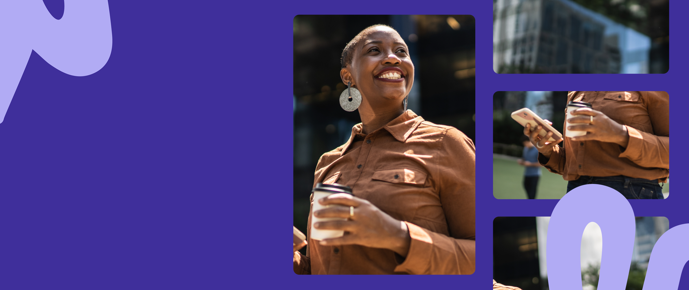
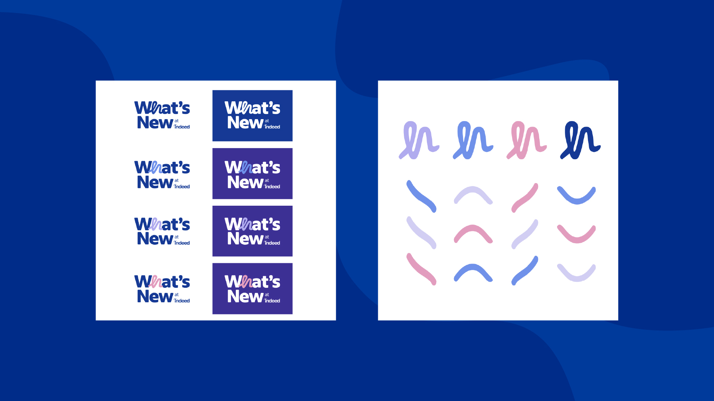
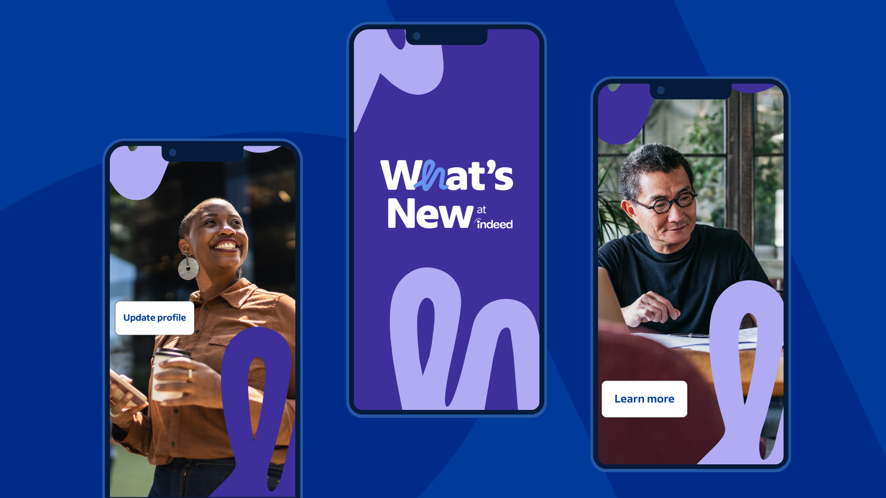
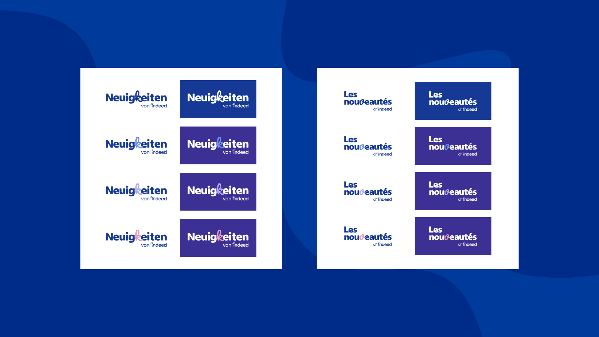
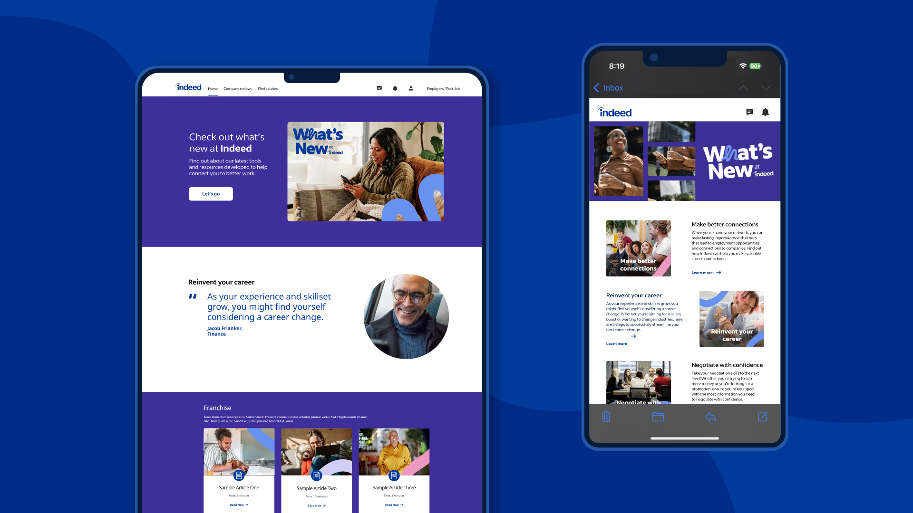

Overview
"What's New at Indeed" is a recurring email and blog campaign that highlights new or updated Indeed products and features — showing active and inactive job seekers on Indeed's email list how recent updates can help them search, apply, and land jobs. The team wanted a refreshed visual identity that felt modern, approachable, and on-brand.
As the lead graphic designer, I developed a new design system for the campaign: a fresh logo lockup, a cohesive set of email banner templates, a social graphics suite, and supporting blog imagery — all built to scale across recurring sends and adapt to localized markets.

Challenge
The existing "What's New" blog and email newsletter lacked a strong visual identity — they felt utilitarian rather than inviting. The team needed a system that could hold attention in a crowded inbox, work for both active job seekers and those who hadn't opened Indeed in months, and remain flexible enough to spotlight different features every send.
An additional challenge: the campaign needed to localize cleanly into Canadian French and German, meaning every design decision had to account for text expansion and different reading contexts.

Approach
I designed a new "What's New at Indeed" logo lockup in multiple color variants — purple, pink, white, and accessibility-compliant versions — so it could work across different email backgrounds and contexts.
The email banner templates used a modular grid: a consistent header zone, a flexible feature spotlight area, and a clear CTA block. Each feature send spotlighted specific product updates, including:
Social graphics were designed in parallel to support the organic amplification of each send. For localization, I built templates with flexible text zones and tested each design against expanded German and French copy.

Outcome
The refreshed "What's New" identity gave the team a design system they could operate independently — consistent enough to feel like a brand, flexible enough to spotlight a new product every two weeks. The localized versions launched in Canada and Germany without requiring design rework for each market.
The campaign helped Indeed learn which messaging and CTAs — "Find jobs," "Calculate salary," "Update your profile" — performed best with different segments of their email list.

Credits
Next Project
The Costco Ben Party